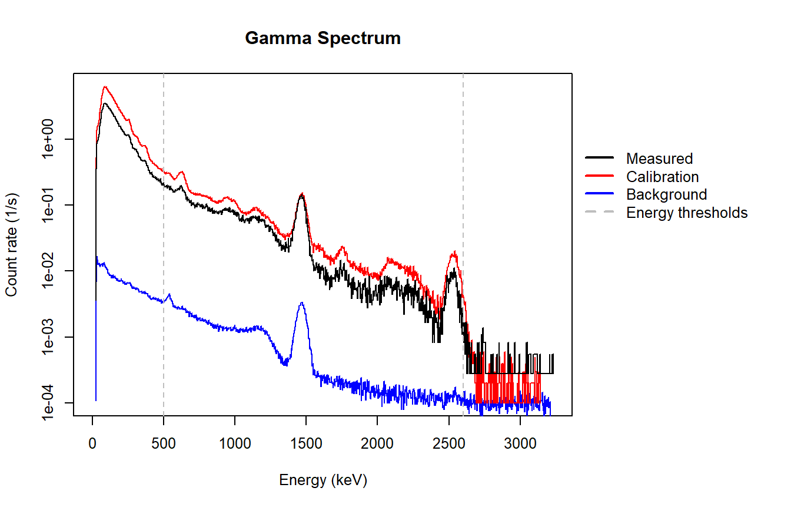
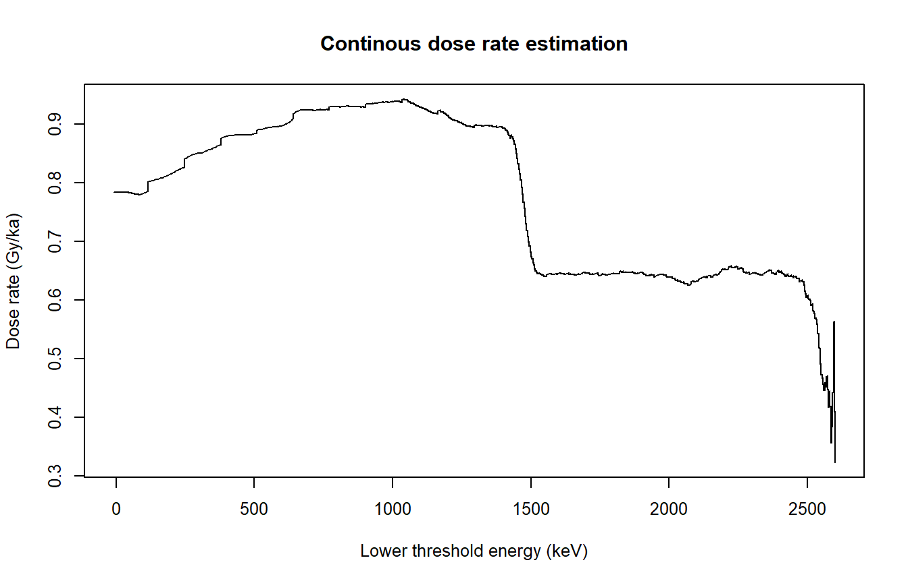
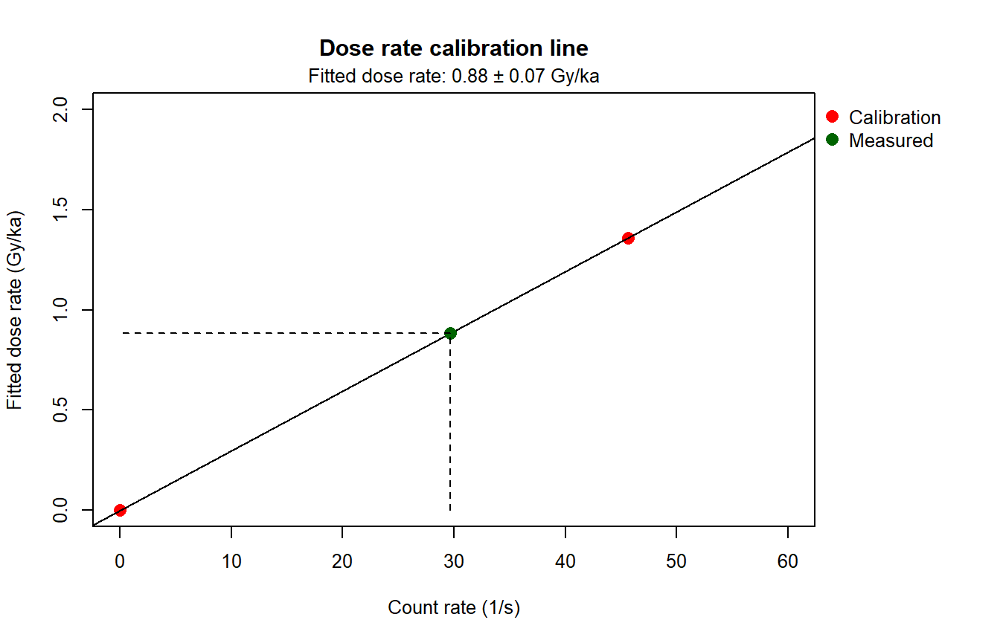

vignettes/usage.Rmd
usage.Rmd## Warning in readLines(file): incomplete final line found on 'C:/Users/BUROW-
## PC/Documents/R/win-library/3.6/gammaSpec/extdata/Nievenheim_DORNIE_1.spe'## List of 10
## $ SPEC_ID : chr "profile"
## $ SPEC_REM : chr [1:3] "DET# 1" "DETDESC# SFB806F2XFR digiBASE-RH SN 15121444" "AP# GammaVision Version 6.07"
## $ DATE_MEA : chr "05/18/2016 11:55:14"
## $ MEAS_TIM :List of 2
## ..$ live: int 3600
## ..$ real: int 3602
## $ DATA :'data.frame': 1024 obs. of 4 variables:
## ..$ channel : int [1:1024] 1 2 3 4 5 6 7 8 9 10 ...
## ..$ energy : num [1:1024] -8.26 -5.09 -1.92 1.25 4.42 ...
## ..$ counts : int [1:1024] 0 0 0 0 0 0 0 0 0 0 ...
## ..$ counts_norm: num [1:1024] 0 0 0 0 0 0 0 0 0 0 ...
## $ ROI : chr [1:3] "2" "16 27" "447 488"
## $ PRESETS : chr [1:3] "Live Time" "3600" "0"
## $ ENER_FIT :List of 2
## ..$ intercept: num -11.4
## ..$ slope : num 3.17
## $ MCA_CAL : chr [1:2] "3" "-1.142621E+001 3.169478E+000 0.000000E+000 keV"
## $ SHAPE_CAL: chr [1:2] "3" "8.996625E+000 2.588119E-002 0.000000E+000"
## - attr(*, "class")= chr [1:2] "SPE" "list"res <- calc_DoseRate(data = spec,
energy.min = 500,
energy.max = 2600,
background.correction = TRUE,
plot = TRUE,
plot.combine = FALSE,
app = FALSE,
cex = 0.8)##
## [calc_DoseRate()]
##
## Estimated external wet gamma dose rate (including cosmic dose rate):
##
## 0.884 ± 0.069